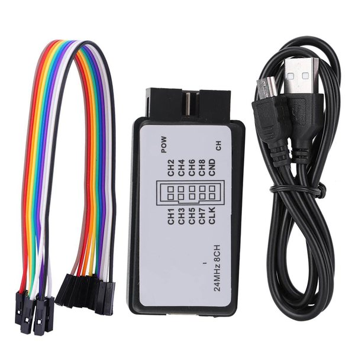
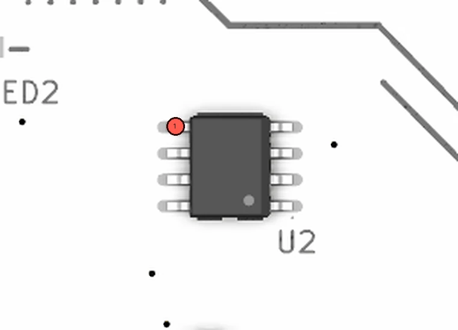
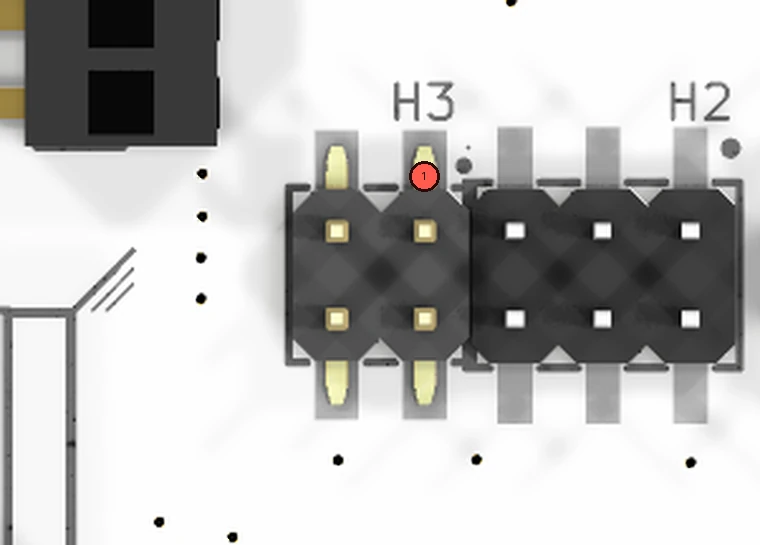
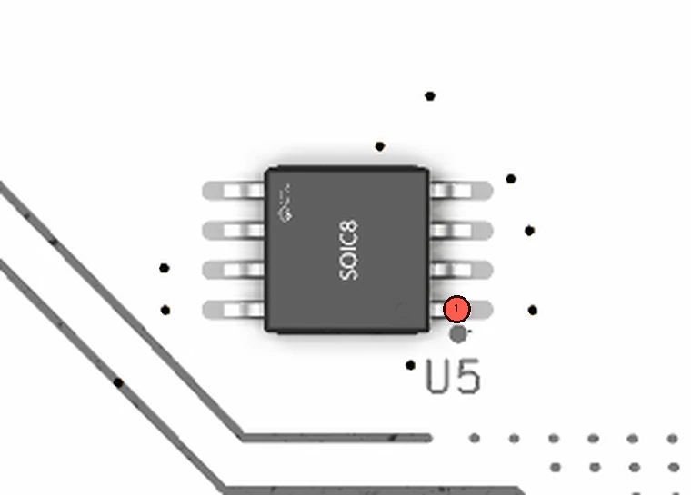
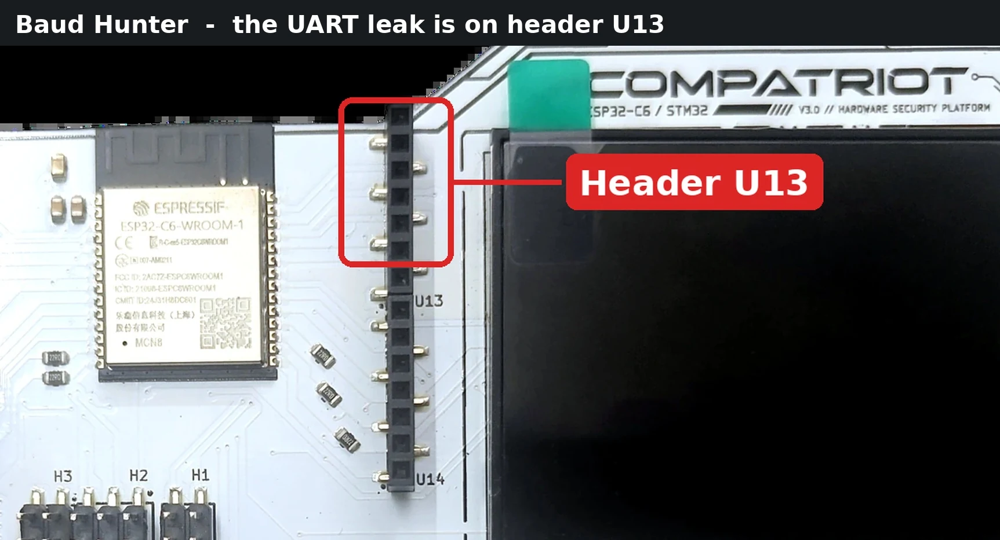
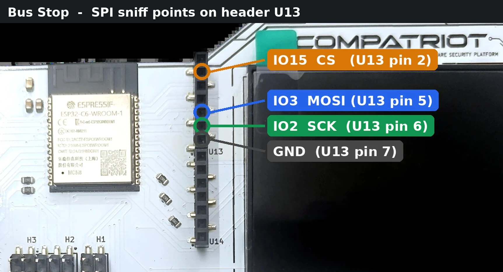
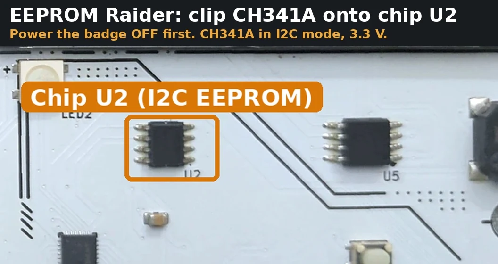
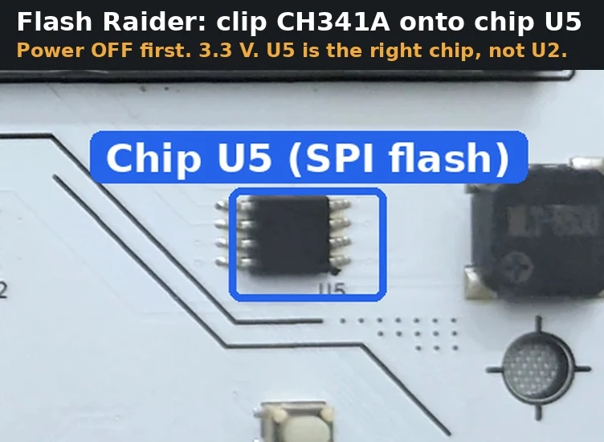
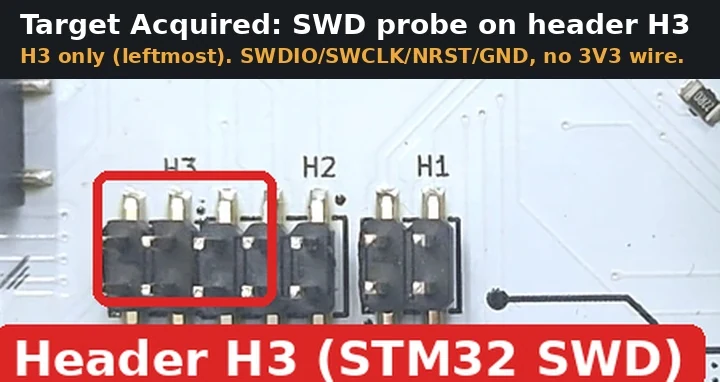

Each challenge here only runs while it's the selected lab on the badge. Opening a
different one stops the previous lab's signal. Two of them (Shell Breakout, Bus Stop)
are solved right inside the serial console. The rest need a logic analyzer on a bus,
or physically dumping a chip off the board.
New to logic analyzers or chip dumping? Check the
glossary first.
Tools
Four pieces of hardware cover the six challenges below. None of it needs
to be expensive, the cheap clones of each work fine.
Serial adapter
USB-TTL / any USB-serial cable. Drives Shell Breakout, Bus Stop, and flag submission.

Logic analyzer
Saleae-compatible, run with the Logic 2 app. Used for Baud Hunter and Bus Stop.
CH341A programmer
With an SOIC-8 test clip. Dumps the external EEPROM and flash chips. Set its voltage jumper to 3.3V first.
SWD probe
ST-Link or J-Link. Debugs the STM32 target over H3 for Target Acquired.
Already on the Arsenal Labs kit? All of this is
preinstalled there. Skip straight to Header reference below.
Install the tools
4 installs + serial setup
Install all of this once on a Linux machine, in a terminal.
Serial terminal:screen, minicom or
picocom all work, pick one.
sudo apt install minicom
Logic 2 (Saleae's logic analyzer app) isn't a package, download the
installer directly:
saleae.com/downloads
— grab the Linux .AppImage, mark it executable
(chmod +x Logic*.AppImage), then run it. Free, no account needed
for the app itself.
Don't have real Saleae hardware? The cheap 8-channel clones work fine with the
free, open-source PulseView instead (sudo apt install pulseview,
or sigrok.org/wiki/Downloads).
The steps below are written for Logic 2; PulseView's menu names differ but the
same settings (sample rate, channel assignment, decoder/analyzer type) are all
there under different labels.
flashrom and i2c-tools, for the CH341A:
sudo apt install flashrom i2c-tools
OpenOCD and the ARM GDB toolchain, for the STM32 SWD probe:
sudo apt install openocd gdb-multiarch
If arm-none-eabi-gdb specifically isn't on your system after
that, install the full cross toolchain instead:
sudo apt install gcc-arm-none-eabi
Connecting to the badge's serial port. This is the same every time you
see "connect at 115200 8N1" below, for Shell Breakout, Bus Stop, and for
submitting a flag. Everything here assumes Linux (the Arsenal Labs kit).
The badge console runs on a USB-to-UART TTL adapter, not the
USB-C port. Wire the adapter to header U13: adapter RX → U13 pin 3,
adapter TX → U13 pin 4, and a shared GND. Use 3.3 V logic.
Wire the TTL adapter to U13 as above and plug the adapter into your computer.
Find its port name:
ls /dev/ttyUSB*
A TTL adapter is usually /dev/ttyUSB0 (native USB-C would be
/dev/ttyACM* instead).
Open it with your serial terminal at 115200 baud, 8 data bits, no parity,
1 stop bit (written as "115200 8N1"). Any of these work:
minicom -D /dev/ttyUSB0 -b 115200
screen /dev/ttyUSB0 115200
putty -serial /dev/ttyUSB0 -sercfg 115200,8,n,1,N
(PuTTY isn't just a Windows tool, sudo apt install putty gets
you the same program and the same command-line flags on Linux.)
You should land at a prompt or see the badge printing text. If it's
silent, make sure the right lab or screen is open on the badge.
Board map
A render of the actual board, built from the KiCad project. Every ring, number and
pin 1
dot is placed from real PCB coordinates rather than drawn by hand. The seven green
numbers are clickable — each opens a close-up of that part with its exact pinout.
Select a green number above — U13, U14, H1,
H2, H3, U2 or U5 — for a close-up and its exact pinout.
H1 — UART cross-link M4_X6521WVS-2x02H-C60D74
The STM32 ↔ ESP32 serial cross-link.
Pin 1 is the red dot.
Pin
Function
Net
1
—
STM32_TX
2
—
RX_ESP32
3
—
STM32_RX
4
—
TX_ESP32
U2 — I²C EEPROM M24256E-FMN6TP
I²C EEPROM at address 0x50 on the shared I²C bus. Power the board off before clipping onto it.

Pin 1 is the red dot.
Pin
Function
Net
1
NC
not connected
2
NC
not connected
3
NC
not connected
4
VSS
P,GND
5
SDA
I2C_SDA
6
SCL
I2C_SCL
7
WC
EEPROM_WP
8
VCC
3V3_ESP32
H2 — ESP32 JTAG 210SMT-2*3P Gold-plated black
ESP32-C6 JTAG. Pin 1 carries 3V3.
Pin 1 is the red dot.
Pin
Function
Net
1
—
3V3_ESP32
2
—
P,GND
3
—
JTAG_TDI
4
—
JTAG_TDO
5
—
JTAG_TMS_DAP_SWDIO
6
—
JTAG_TCK_DAP_SWCLK
U14 — SPI / I²C bus F1_PM2.54-1x7PLT-H8.5-R
The shared SPI and I²C bus. The EEPROM and flash chips sit on these same lines.
Pin 1 is the red dot.
Pin
Function
Net
1
—
BOOT_ESP32
2
—
SPI_MOSI
3
—
SPI_MISO
4
—
SPI_CLK
5
—
I2C_SDA
6
—
I2C_SCL
7
—
LCD_CS
H3 — STM32 SWD M4_X6521WVS-2x02H-C60D74
STM32 SWD. There is no 3V3 pin on this header — do not wire one.

Pin 1 is the red dot.
Pin
Function
Net
1
—
SWDIO
2
—
SWCLK
3
—
NRST
4
—
P,GND
U5 — SPI NOR flash W25Q64JVSSIQ
SPI NOR flash on the shared SPI bus. This is the right-hand chip — U2 is the other one.

Pin 1 is the red dot.
Pin
Function
Net
1
CS
FLASH_CS
2
DO (IO1)
SPI_MISO
3
WP (IO2)
not connected
4
GND
P,GND
5
DI (IO0)
SPI_MOSI
6
CLK
SPI_CLK
7
HOLD / RESET (IO3)
not connected
8
VCC
3V3_ESP32
U13 — console UART F1_PM2.54-1x7PLT-H8.5-R
This is the console. A USB-to-UART TTL adapter goes here — not the USB-C port. Baud Hunter drops this same UART to 57600 while its lab is open.
Pin 1 is the red dot.
Pin
Function
Net
1
—
not connected
2
—
GPIO15
3
—
RX_ESP32
4
—
TX_ESP32
5
—
MOD2_CS
6
—
MOD1_CS
7
—
P,GND
Chip-dump targets: EEPROM & flash
EEPROM Raider and Flash Raider each target a separate memory chip, on separate buses.
Both are marked on the board map above — select U2 or U5 there for the
exact pinout taken from the PCB.
Chip
Bus
Signals
U2 (M24256E)
I2C, addr 0x50
I2C_SDA / I2C_SCL
U5 (W25Q64)
SPI
SPI_CLK / SPI_MOSI / SPI_MISO / FLASH_CS
01
Shell Breakout
Easy
The badge exposes a minimal UNIX-like shell over USB serial with a small fake
filesystem. A flag file sits in a hidden directory. A plain directory listing
won't show it, but that doesn't mean it can't be reached.
Tool
A serial terminal at 115200 8N1 (PuTTY, screen, minicom).
Connection
No extra wiring. Just the badge's own USB cable, plugged into your computer.
See Connecting to the badge's serial port above for the
exact commands.
ls is not the whole truth on a UNIX box. A directory can hold
something a listing doesn't show you, and cd doesn't care what
ls hides.
Full guide
Connect at 115200 8N1. You land at a shell prompt in the home directory.
ls shows a notes file and a couple of directories. Nothing
obviously useful.
cat the notes file. It's a red herring about a password, a
nudge to keep digging rather than an answer.
cd into the documents directory and ls again. Only
one file shows up.
The shell's ls hides dot-entries, but cd doesn't
block them. Try cd .secret even though you never saw it listed.
It works.
ls again inside it. The flag file is right there.
cat it. The flag prints, and the badge marks the lab solved the
instant it does.
02
Baud Hunter (UART)
Easy
While this lab is open, a flag streams on the badge's own UART, the same header
U13 pins your console TTL adapter is wired to, but not at your console's baud
rate. Your 115200 terminal just shows garbage. The whole puzzle is finding the
real baud.
Tool
Your USB-UART TTL adapter and terminal (or a logic analyzer on U13 if you'd
rather measure the waveform). No extra wiring, it's the pins you're already on.
Approach
Open the Baud Hunter lab, then either reconnect your terminal while stepping
through the standard baud rates until the stream decodes cleanly, or capture
U13's TX line on a logic analyzer, measure one bit's width, and compute the
rate from it.
Connection

Where: header U13, the same header you connect the console TTL
adapter to. The leak is on the console's TX line. See the attachment for which
header is U13; figuring out the exact pin and baud is the challenge.
Nothing extra to wire, you're already connected for the console.
It's a UART, same pins as your console, just a different speed. 9600 and
115200 are both wrong. Measure a bit's width off a capture, or try the other
standard rates in order.
Full guide
With your TTL adapter already on U13 (RX→pin3, TX→pin4, GND),
open Embedded → Baud Hunter on the badge.
Your 115200 terminal now shows garbage, that confirms something is
transmitting at a different rate.
Either: reconnect your terminal at each standard rate in turn
(9600, 19200, 38400, 57600, 115200) until the text decodes cleanly;
Or: clip a logic analyzer onto U13's TX line, capture at ≥1 MS/s, add an
Async Serial analyzer, measure one data bit's width, and baud = 1 / that
time (expect tens of microseconds).
The answer is 57600 baud. At that rate the flag decodes, repeating
once per second.
03
Bus Stop (SPI)
Medium
A two-step one: the SPI bus carries a password, not the flag directly.
Sniff the password, then type it back into the lab's own serial console to
unlock the flag. It's a small model of a bus leaking a credential rather than
the secret itself.
Tool
Logic analyzer + Logic 2, plus a serial terminal for the console step. Wire to
SCK (IO2) / MOSI (IO3) / CS (IO15) plus GND.
Approach
Capture at ≥1 MS/s, add an SPI analyzer set to mode 0 / MSB-first / CS active-low,
and read the MOSI lane's bytes as ASCII. Open a serial connection to the badge
with this lab selected and send the recovered text back.
CS lives on IO15, not IO4. IO4 is also wired to the onboard
SWD line used to program the STM32 target (see Target
Acquired), so this lab was moved off it to keep the two from fighting
over the same pin.
Connection

Badge pin
Header
Logic analyzer
IO2
U13 pin 6
SCK
IO3
U13 pin 5
MOSI
IO15
U13 pin 2
CS
GND
U13 GND
GND
Where: all three land on header U13, same connector as
IO16 for Baud Hunter. SCK is pin 6 (net
MOD1_CS), MOSI is pin 5 (net MOD2_CS), CS is
pin 2 (a spare GPIO15, labeled on the schematic as just GPIO15).
No MISO wire, there isn't one. This is a transmit-only bus, leave that
channel unassigned in your decoder.
The bus isn't leaking the flag, it's leaking the way in. Mode 0, MSB first,
and the password is plain ASCII once decoded.
Full guide
Wire SCK to IO2 (U13 pin 6), MOSI to IO3
(U13 pin 5), CS to IO15 (U13 pin 2), plus GND. Leave MISO
unassigned, this is a transmit-only bus.
Set the sample rate to ≥1 MS/s (10x the ~100 kHz bus clock) and click
Start, let it run a couple of seconds to catch a few bursts.
Click the + next to Analyzers, pick SPI, assign CLK/MOSI/
Enable to the matching channels, and set Clock State (CPOL) = 0, Clock Phase
(CPHA) = 0, Bits per Transfer = 8, Significant Bit = MSB first, Enable Line =
Active Low.
The MOSI lane's decode in the Data Table reads as ASCII text: that's the
password. If you see garbage instead, double-check the Enable polarity and
CPOL/CPHA, a mode mismatch is the usual culprit.
Open a serial connection to the badge at 115200 8N1 with this lab selected,
and type the recovered password in.
The badge replies with the flag directly in the terminal and marks the lab
solved.
04
EEPROM Raider
Medium
The flag lives on the external I2C EEPROM (U2), not inside the ESP32's own
firmware. A plain single-byte-addressed dump reads the wrong location on this
chip, it needs two address bytes.
Tool
CH341A programmer in I2C mode + i2c-tools.
Approach
Power the badge off before clipping on. Confirm the chip answers at its address
with i2cdetect, then use a two-byte-address read starting at offset
0. This chip is large enough that it needs the full 16-bit address, not the
single-byte form most dump commands default to.
Connection

CH341A
U2 (EEPROM)
SDA
SDA
SCL
SCL
VCC
3.3V
GND
GND
Power the badge off first. Switch the CH341A to I2C mode and clip the
SOIC-8 test clip onto U2, matching pin 1 carefully, the same precision this
takes on Flash Raider.
This isn't a 24C02. One address byte reads you garbage from the wrong place,
this chip needs two.
Full guide locked
05
Flash Raider
Medium
Same idea as EEPROM Raider, different chip and bus: the flag lives on the external
SPI NOR flash (U5), not in the ESP32's own program memory. The most hands-on
challenge on the badge, and the most common real hardware-hacking workflow there
is.
Tool
CH341A programmer in SPI mode + flashrom.
Approach
Power the badge off and unplug USB entirely before clipping on. Check the
CH341A's voltage jumper is set to 3.3V, not 5V. Confirm the programmer identifies
the chip before dumping, then search the dumped image for a readable flag
banner.
Connection

CH341A
U5 (flash)
CS
CS
CLK
SCK
DI
MOSI
DO
MISO
VCC
3.3V
GND
GND
Power the badge off and unplug USB entirely first. Check the CH341A's
voltage jumper is set to 3.3V, not 5V, that's the single most common way to
damage this chip. Clip the SOIC-8 test clip onto U5, matching pin 1 carefully.
The flag was never in the microcontroller. Dump the external chip and search
the raw bytes for readable text.
Full guide locked
06
Target Acquired (STM32)
Hard
A real firmware-reversing challenge against the badge's second microcontroller:
an STM32F103C8T6 wired up purely as a training target, unconnected to the ESP32's
own challenge engine. Its firmware holds the flag encrypted, not in the clear, so
a plain dump won't hand it over directly.
Tool
ST-Link or J-Link SWD probe + openocd + arm-none-eabi-gdb
(or a disassembler like Ghidra). See the H3 header table
above for wiring.
Approach, two valid paths
Static: dump the flash over SWD, disassemble it, find the small decryption
loop and recover its key, then apply it to the ciphertext sitting nearby in the
dump. Live: attach GDB to the running chip instead, it already decrypted the
flag into RAM once at boot, so you can read the plaintext straight out of memory
without redoing the math.
A probe reporting "cannot identify target" almost always means
SWDIO/SWCLK are swapped.
Connection

H3 is the leftmost of the three 2x2 headers (H3, H2, H1). Full pinout below.
H3 pin
Probe wire
SWDIO
SWDIO
SWCLK
SWCLK
NRST
NRST (if your probe breaks it out)
GND
GND
H3 has no 3V3 pin, the STM32 target is already powered from the main board.
Don't wire 3V3 to this header.
The flag isn't in flash as plaintext, but the chip already decrypted it once
into RAM at boot. You can watch it happen, or redo the single instruction that
undoes it.